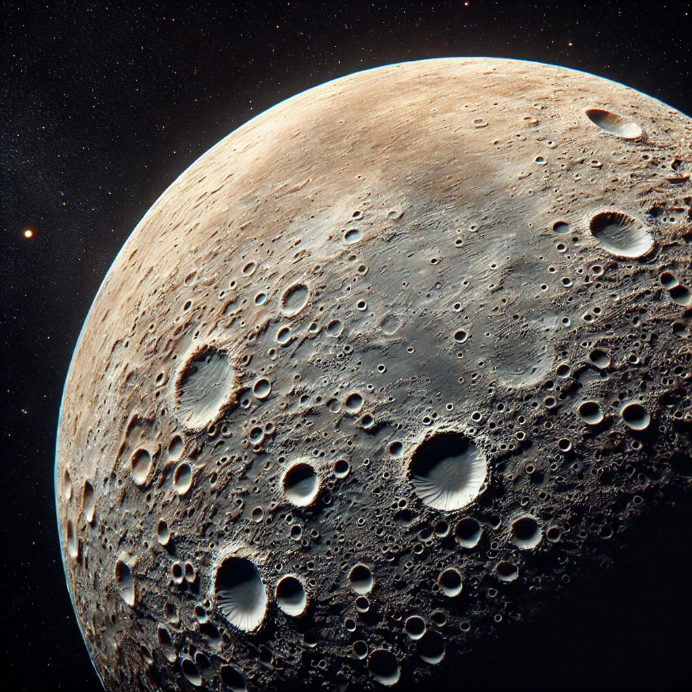
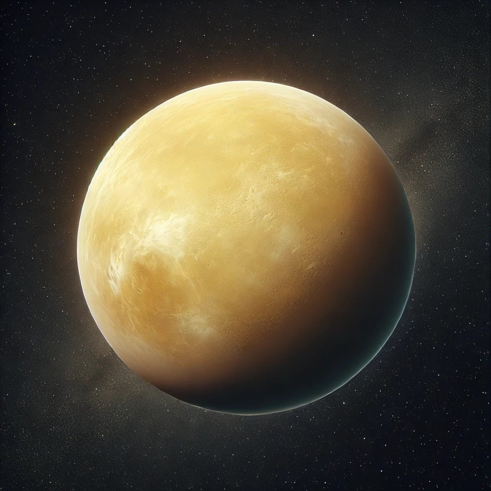
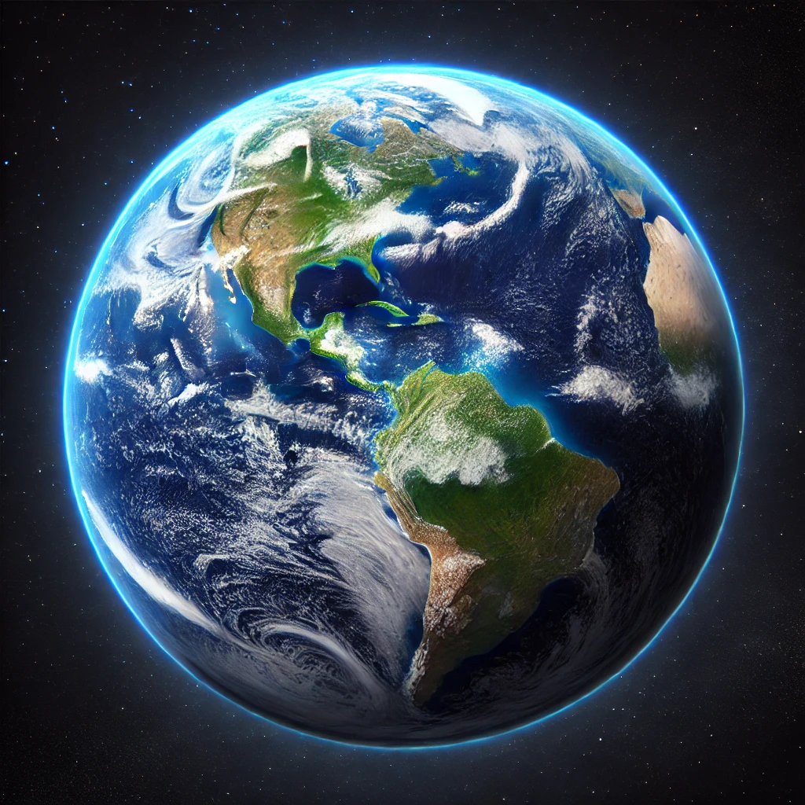
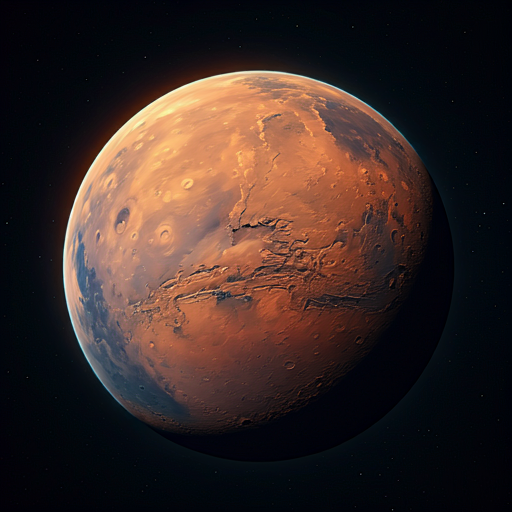

Data of Four Planets
| Planet | Mass (1024 kg) | Diameter (km) | Gravity (m/s2) | Distance from Sun (106 km) | Escape Velocity (km/s) | Orbital Period (days) | Ring System? | Picture |
|---|---|---|---|---|---|---|---|---|
| Mercury | 0.330 | 4879 | 3.7 | 57.9 | 4.3 | 88.0 | No |  |
| Venus | 4.87 | 12,104 | 8.9 | 108.2 | 10.4 | 224.7 | No |  |
| Earth | 5.97 | 12,756 | 9.8 | 149.6 | 11.2 | 365.2 | No |  |
| Mars | 0.642 | 6792 | 3.7 | 228.0 | 5.0 | 687.0 | No |  |